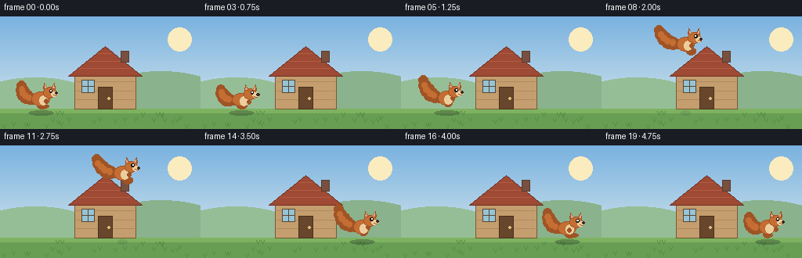
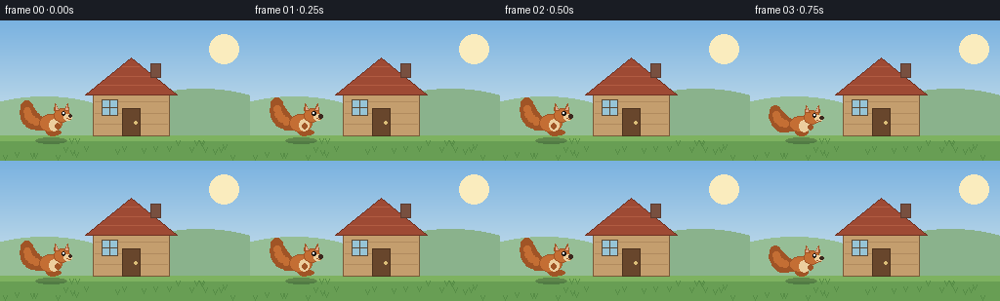

CODING AGENTS AS PIXEL WORLD MODELS
traex/Seed-2.1-Pro-0915 · dynamic_spatial_relationship_0024
点击播放 · 原生 RGB 像素
逐轮保存的候选
回放视频、检查图与代码变化。
每份候选均可单独播放。实际图片检查记录在下方工具轨迹中。
候选 01播放与检查图
点击播放 · 原生 RGB 像素


展开代码变化
--- 上一保存版本
+++ 本次保存版本
@@ -0,0 +1,237 @@
+"""Text-to-video: a squirrel jumps from the left of a hut to its right.
+
+Renders 20 RGB frames at 256x144 (4 fps) procedurally with PIL, then saves
+them through artifact_io.save.
+"""
+import math
+import numpy as np
+from PIL import Image, ImageDraw
+
+import artifact_io
+
+W, H, N, FPS = 256, 144, 20, 4.0
+GROUND_Y = 118 # top of the ground band
+
+# Hut geometry (fixed in world space)
+HUT = {"cx": 134, "w": 78, "wall_h": 46, "roof_h": 34}
+
+
+def lerp(a, b, t):
+ return a + (b - a) * t
+
+
+def sky_background():
+ """Static sky + distant hills + ground, drawn once per frame onto an image."""
+ img = Image.new("RGB", (W, H), (0, 0, 0))
+ dr = ImageDraw.Draw(img)
+ # vertical sky gradient (soft morning blue -> warm near horizon)
+ top = np.array([122, 178, 224], dtype=np.float32)
+ bot = np.array([205, 226, 235], dtype=np.float32)
+ for y in range(GROUND_Y):
+ t = y / GROUND_Y
+ c = tuple((top * (1 - t) + bot * t).astype(np.uint8))
+ dr.line([(0, y), (W, y)], fill=c)
+ # soft sun
+ dr.ellipse([214, 14, 244, 44], fill=(250, 236, 190))
+ # distant hills
+ dr.ellipse([-40, 78, 130, 150], fill=(150, 190, 150))
+ dr.ellipse([110, 70, 300, 160], fill=(138, 178, 140))
+ # ground
+ dr.rectangle([0, GROUND_Y, W, H], fill=(104, 158, 84))
+ dr.rectangle([0, GROUND_Y, W, GROUND_Y + 5], fill=(126, 178, 96))
+ # a few grass tufts (deterministic)
+ rng = np.random.default_rng(7)
+ for gx in rng.integers(4, W - 4, 26):
+ gy = GROUND_Y + 8 + int(rng.integers(0, 18))
+ dr.line([(gx, gy), (gx - 2, gy - 5)], fill=(86, 140, 70), width=1)
+ dr.line([(gx, gy), (gx + 2, gy - 5)], fill=(86, 140, 70), width=1)
+ return img
+
+
+def draw_hut(img):
+ dr = ImageDraw.Draw(img)
+ cx = HUT["cx"]
+ w = HUT["w"]
+ wall_h = HUT["wall_h"]
+ roof_h = HUT["roof_h"]
+ left = cx - w // 2
+ right = cx + w // 2
+ wall_top = GROUND_Y - wall_h
+ # walls
+ dr.rectangle([left, wall_top, right, GROUND_Y], fill=(196, 158, 110), outline=(120, 88, 56))
+ # plank lines
+ for i in (1, 2, 3):
+ yy = wall_top + wall_h * i // 4
+ dr.line([(left + 2, yy), (right - 2, yy)], fill=(176, 138, 94))
+ # roof (triangle)
+ roof = [(left - 8, wall_top + 4), (cx, wall_top - roof_h), (right + 8, wall_top + 4)]
+ dr.polygon(roof, fill=(158, 74, 52), outline=(110, 48, 34))
+ dr.line(roof + [roof[0]], fill=(110, 48, 34), width=1)
+ # roof shingle lines
+ for i in range(1, 4):
+ t = i / 4
+ yv = lerp(wall_top - roof_h, wall_top + 4, t)
+ half = (w / 2 + 8) * t
+ dr.line([(cx - half + 3, yv), (cx + half - 3, yv)], fill=(178, 92, 66))
+ # door
+ dw, dh = 18, 28
+ dr.rectangle([cx - dw // 2, GROUND_Y - dh, cx + dw // 2, GROUND_Y],
+ fill=(104, 70, 44), outline=(74, 48, 28))
+ dr.ellipse([cx + 3, GROUND_Y - dh // 2 - 1, cx + 6, GROUND_Y - dh // 2 + 2],
+ fill=(220, 190, 120))
+ # window
+ dr.rectangle([left + 9, wall_top + 9, left + 25, wall_top + 25],
+ fill=(150, 196, 214), outline=(90, 70, 50))
+ dr.line([(left + 17, wall_top + 9), (left + 17, wall_top + 25)], fill=(90, 70, 50))
+ dr.line([(left + 9, wall_top + 17), (left + 25, wall_top + 17)], fill=(90, 70, 50))
+ # chimney
+ dr.rectangle([cx + 20, wall_top - roof_h + 6, cx + 30, wall_top - roof_h + 20],
+ fill=(120, 80, 64), outline=(90, 58, 46))
+
+
+def draw_squirrel(img, cx, ground_y, squash=0.0, stretch=0.0, legphase=0.0,
+ facing=1.0, airborne=False, tuck=0.0):
+ """Draw a squirrel roughly centered at (cx, ground_y = foot line)."""
+ dr = ImageDraw.Draw(img)
+ fur = (196, 110, 52)
+ fur_dark = (160, 84, 38)
+ belly = (236, 206, 158)
+
+ sy = 1.0 - 0.30 * squash + 0.18 * stretch
+ sx = 1.0 + 0.22 * squash - 0.10 * stretch
+
+ def P(x, y):
+ # local coords: x forward/back, y up from feet; apply squash & mirror
+ return (cx + facing * x * sx, ground_y - y * sy)
+
+ def ellipse_local(cx0, cy0, rx, ry, fill, outline=None):
+ ex = rx * sx
+ ey = ry * sy
+ c = P(cx0, cy0)
+ dr.ellipse([c[0] - ex, c[1] - ey, c[0] + ex, c[1] + ey], fill=fill, outline=outline)
+
+ # ---- tail (behind body): big bushy curve; waves on ground, trails in air ----
+ wave = math.sin(legphase) * (0.0 if airborne else 4.0)
+ if airborne:
+ base = P(-9, 13)
+ tip = P(-30 - 4 * tuck, 30 + 5 * (1 - tuck))
+ else:
+ base = P(-9, 12)
+ tip = P(-24, 30 + wave)
+ tail_pts = []
+ for i in range(6):
+ tt = i / 5
+ mx = lerp(base[0], tip[0], tt) + facing * math.sin(tt * math.pi) * -3
+ my = lerp(base[1], tip[1], tt) + math.sin(tt * math.pi) * 4
+ tail_pts.append((mx, my))
+ rads = [6, 8, 9, 9, 8, 6]
+ for (px, py), r in zip(tail_pts, rads):
+ r *= (0.5 + 0.5 * sy) ** 0.5
+ dr.ellipse([px - r, py - r, px + r, py + r], fill=fur_dark)
+ for (px, py), r in list(zip(tail_pts, rads))[1:-1]:
+ r2 = r * 0.45
+ dr.ellipse([px - r2 - 1, py - r2 - 1, px + r2 - 1, py + r2 - 1], fill=fur)
+
+ # ---- back leg / foot ----
+ if airborne:
+ ellipse_local(2 + 6 * tuck, 6 - 3 * tuck, 6, 4, fur_dark)
+ foot = P(2 + 6 * tuck, 9 - 4 * tuck)
+ else:
+ stride = math.sin(legphase) * 4
+ ellipse_local(2 + stride * 0.5, 4, 6, 4, fur_dark)
+ foot = P(4 + stride, 3)
+ dr.ellipse([foot[0] - 6, foot[1] - 2.5, foot[0] + 6, foot[1] + 2.5], fill=fur_dark)
+
+ # ---- body ----
+ ellipse_local(0, 13, 11, 9, fur, outline=fur_dark)
+ bc = P(3, 11)
+ dr.ellipse([bc[0] - 5, bc[1] - 6, bc[0] + 5, bc[1] + 6], fill=belly)
+
+ # ---- front paw ----
+ if airborne:
+ pc = P(8, 13 - 2 * tuck)
+ else:
+ ps2 = math.sin(legphase + math.pi) * 4
+ pc = P(7 + ps2, 10)
+ dr.ellipse([pc[0] - 2.6, pc[1] - 3, pc[0] + 2.6, pc[1] + 3], fill=fur_dark)
+
+ # ---- head ----
+ head_c = P(11, 21)
+ hrx, hry = 8, 7
+ dr.ellipse([head_c[0] - hrx, head_c[1] - hry, head_c[0] + hrx, head_c[1] + hry],
+ fill=fur, outline=fur_dark)
+ # ears
+ for sgn in (-1, 1):
+ earx = head_c[0] + sgn * 5
+ eary = head_c[1] - hry + 1
+ pts = [(earx - 2.5, eary + 1), (earx + 2.5, eary + 1), (earx + sgn * 1.5, eary - 6)]
+ dr.polygon(pts, fill=fur_dark)
+ pts2 = [(earx - 1, eary), (earx + 1, eary), (earx + sgn * 0.8, eary - 3.5)]
+ dr.polygon(pts2, fill=(224, 170, 140))
+ # muzzle + nose
+ muz = P(17, 19)
+ dr.ellipse([muz[0] - 4, muz[1] - 3, muz[0] + 4, muz[1] + 3], fill=belly)
+ nose = P(20, 20)
+ dr.ellipse([nose[0] - 1.6, nose[1] - 1.6, nose[0] + 1.6, nose[1] + 1.6], fill=(60, 40, 30))
+ # eye
+ eye = P(13, 23)
+ dr.ellipse([eye[0] - 1.8, eye[1] - 2, eye[0] + 1.8, eye[1] + 2], fill=(30, 24, 20))
+ dr.ellipse([eye[0] - 0.6, eye[1] - 1.1, eye[0] + 0.6, eye[1] + 0.1], fill=(255, 255, 255))
+ dr.line([(head_c[0] + 5, head_c[1] + 3), (head_c[0] + 9, head_c[1] + 4)], fill=fur_dark)
+
+
+def squirrel_pose(frame):
+ """Return (cx, foot_y, squash, stretch, legphase, airborne, tuck, facing)."""
+ left_x, right_x = 52.0, 212.0
+ if frame <= 2:
+ ph = frame * 0.9
+ return left_x, GROUND_Y, 0.06 + 0.04 * math.sin(ph), 0.0, ph, False, 0.0, 1.0
+ if frame == 3:
+ return left_x, GROUND_Y, 0.35, 0.0, -0.6, False, 0.0, 1.0 # wind up crouch
+ if frame == 4:
+ return left_x + 4, GROUND_Y - 2, 0.0, 0.25, 0.4, False, 0.0, 1.0 # launch
+ if 5 <= frame <= 14:
+ p = (frame - 5) / 9.0
+ cx = lerp(left_x + 6, right_x - 6, p)
+ apex_lift = 78
+ lift = apex_lift * 4 * p * (1 - p)
+ foot = GROUND_Y - lift
+ tuck = math.sin(math.pi * p)
+ stretch = 0.18 if p < 0.18 or p > 0.82 else 0.0
+ return cx, foot, 0.0, stretch, 6.0 + p * 6, True, tuck, 1.0
+ if frame == 15:
+ return right_x, GROUND_Y, 0.40, 0.0, 0.0, False, 0.0, 1.0 # landing squash
+ k = frame - 15
+ ph = frame * 0.9
+ sq = max(0.0, 0.22 - k * 0.07)
+ return right_x, GROUND_Y, sq + 0.03 * math.sin(ph), 0.0, ph, False, 0.0, 1.0
+
+
+def add_shadow(img, cx, lift):
+ dr = ImageDraw.Draw(img, "RGBA")
+ scale = max(0.35, 1.0 - lift / 110.0)
+ rw = 16 * scale
+ alpha = int(90 * scale)
+ dr.ellipse([cx - rw, GROUND_Y + 2, cx + rw, GROUND_Y + 8], fill=(40, 60, 40, alpha))
+
+
+def render_frame(frame):
+ img = sky_background()
+ cx, foot, squash, stretch, ph, airborne, tuck, facing = squirrel_pose(frame)
+ lift = GROUND_Y - foot
+ add_shadow(img, cx, lift)
+ draw_hut(img)
+ draw_squirrel(img, cx, foot, squash=squash, stretch=stretch,
+ legphase=ph, facing=facing, airborne=airborne, tuck=tuck)
+ return np.asarray(img, dtype=np.uint8)
+
+
+def main():
+ frames = np.stack([render_frame(i) for i in range(N)], axis=0)
+ assert frames.shape == (N, H, W, 3), frames.shape
+ artifact_io.save(frames, ".")
+ print(f"Saved {N} frames {W}x{H} at {FPS} fps")
+
+
+if __name__ == "__main__":
+ main()
可观测工具轨迹
实际执行的命令与返回图片。
命令 1exit 0
/bin/bash -lc 'ls -la && cat prompt.txt && echo "=====RULES=====" && cat GENERATION_RULES.md && echo "=====SPEC=====" && cat task_spec.json'
命令 2exit 0
/bin/bash -lc 'cat artifact_io.py'
命令 3exit 0
/bin/bash -lc 'cd "$(pwd)" && python generate.py && ls -la && ls frames | head'
保存候选 1 份；完成命令 3 次；可验证图片返回 0 张。原始 API 响应与完整日志保留在本地。